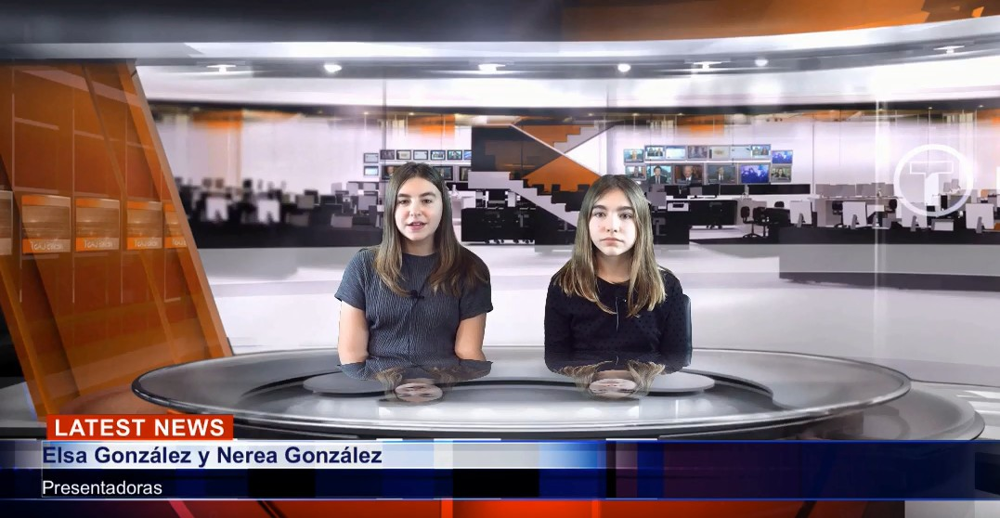
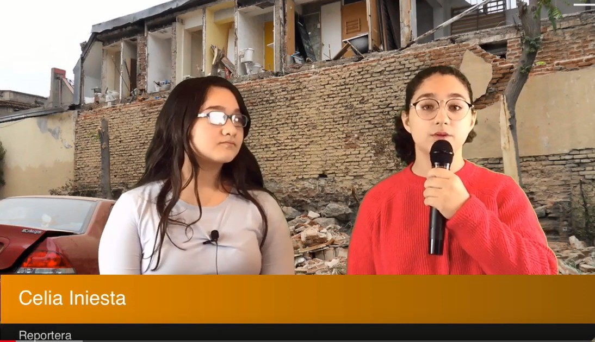

A continuación se explica el proceso que se ha seguido para la realización de un “Noticiario”, con el que se pretende trabajar la unidad didáctica de los “desastres naturales” de 1º de ESO.
Vamos a distinguir varias etapas fundamentales:
1.- REPARTO DE TAREAS
A cada alumno se le asigna un papel: redactores de las noticias, presentadores de los informativos, reporteros, ciudadano testigo o víctima de los acontecimientos que se cuentan, etc.
2.- PREPRODUCCIÓN
Algunos alumnos escribirán un guión de noticias. El profesor revisará dicho guión y corregirá los posibles fallos que puedan aparecer. Una vez dado el visto bueno y a imitación de las emisiones en directo de las noticias reales, los alumnos deben preparar la imagen o el vídeo que se pondrá de fondo en el croma en cada parte del noticiario. Hay que dejar claro cuánto tiempo durará cada parte.
3.- ATREZZO
Los reporteros dispondrán de un guión que previamente se habrán elaborado. Respecto al vestuario, los alumnos deben ir acorde con el momento en el que se está (los presentadores deben aparecer vestidos elegantemente, ropa de calle para los ciudadanos que son preguntados “en directo”, estilo serio para el especialista que informa más específicamente desde su despacho u oficina, por ejemplo). En relación con la ropa, es muy importante recordar que no deben llevar ropa verde como la tela del croma (ya que quedarían transparentes).

4.- ORGANIZACIÓN DEL NOTICIARIO
1.- Se pondrá una cabecera de informativos con música característica y movimiento de cámara (el modelo estará sacado de una de las aplicaciones del croma).
2.- Presentación del telediario por parte de dos alumnos con un guión de noticias que previamente han escrito otros dos compañeros de forma digital que grabarán en un pen-drive y que luego leerán en el teleprompter del croma (en el caso que se disponga). Previamente se ajustará la velocidad de la lectura del telepromter.
3.- Uno de los presentadores abre el noticiario dando la información de un nuevo terremoto en un lugar concreto.
4.- El otro alumno que actúa de presentador dará paso a un compañero que hará de periodista en el lugar donde han ocurrido los movimientos sísmicos “fuera de los estudios de los informativos”. La imagen que deberá aparecer de fondo será la de los destrozos que puede ocasionar un terremoto en una población (un muro caído, grietas en las paredes de una habitación, etc).
5.- El alumno que actuará como reportero se encontrará por tanto en el lugar de los hechos y tras una breve narración de lo acontecido mirando a cámara, se abrirá el plano y presentará a uno de los testigos o víctimas del terremoto en cuestión. Durante esta entrevista el reportero y el ciudadano no leerán el telepromter en la pantalla para que quede más natural a imitación de un telediario real.

6.- Posteriormente el alumno-periodista dará paso de nuevo a los presentadores del noticiario y tras un breve agradecimiento de uno de los alumnos presentadores se dará paso a otro alumno que hará de especialista en terremotos y que hablará desde su oficina o lugar de trabajo por lo que la imagen del croma cambiará totalmente.
7.- Tras la intervención del alumno especialista se dará paso de nuevo al plató de los informativos donde los alumnos presentadores iniciarán otro hilo conductor en este caso con el tema de la calidad del agua.
8.- Se seguirá utilizando el mismo orden de aparición tratado anteriormente para otros temas como son la mala calidad del agua o las inundaciones.
5.- EDICIÓN DE NOTICIAS
En esta fase se montan las informaciones, para lo que es preciso tener una idea clara de las imágenes con las que se cuenta, habiendo visionado previamente lo grabado.
Una vez visionadas, se escriben los textos en el ordenador (nombres de los presentadores, nombres de los reporteros, protagonistas entrevistados de lo que cuenta) y se decide qué fragmentos de las declaraciones (totales) van a aparecer. Hay que tener en cuenta que se mezcla tanto el sonido como la imagen.